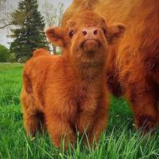

Click here to go to the index of the page!
There are two types of lists in HTML. Ordered lists use the "ol" tag and are displayed as a numbered set of items. Unordered lists use the "ul" tag and are displayed as a list of bullet points. Both kinds of lists take the "li" attribute which stands for list item.
* Source for ordered lists
<ol>
<li>List Item</li>
</ol>
* Rendered
Three Cow Facts:

Here is the same for unordered lists.
* Source
<ul>
<li>List Item</li>
</ul>
* Rendered
Random Unordered Squirrel Facts:
Lists are not just limited to numbers and bullet points. We
can use the list attribute "type" to change how lists are
displayed.
For example,
* Source
<ol type="a">
<li>List Item</li>
</ol>
* Rendered
Here are the possible values for Ordered lists ( ol ):
Type Effect a Alphanumeric - a. b. c. A Uppercase Alphanumeric - A. B. C. i Roman numerals - i. ii. iii. I Uppercase Roman Numerals - I. II. III.
Here are the possible values for Unordered lists ( ul ):
Type Effect square Square Bullets disk Disc Bullets circle Circle Bullets
You can change the starting number for our ordered lists. To
do this we use the "start" attribute.
* Ex.
<ol start="4">
4. list item
5. list item
6. list item
For more about reversing and interupting the order of list check out Ryan's Guide to HTML.
It is possible to have nested lists where one list is included in another list item. They don't have to be the same type so you could, for instance, have an unordered list within an ordered list. There are many places where this is useful. Creating a table of contents is a common situation.
For Example,
Nested Structure:
A definition list is used to create a list of pairs of values. It was originally intended to list words and their definitions but may be used for any list of pairs of values.
* Source
<dl>
<dt>Term</dt>
<dd>Definition</dd>
</dl>
* Rendered
Click here to go to the top of the page!